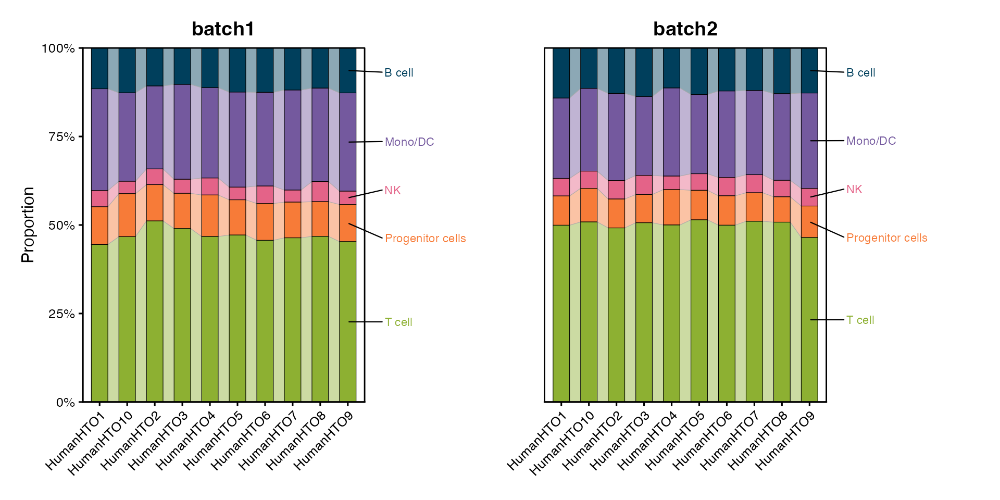
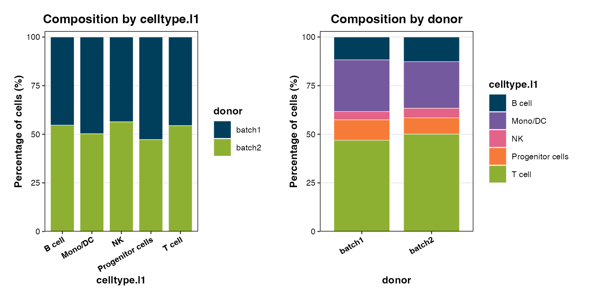
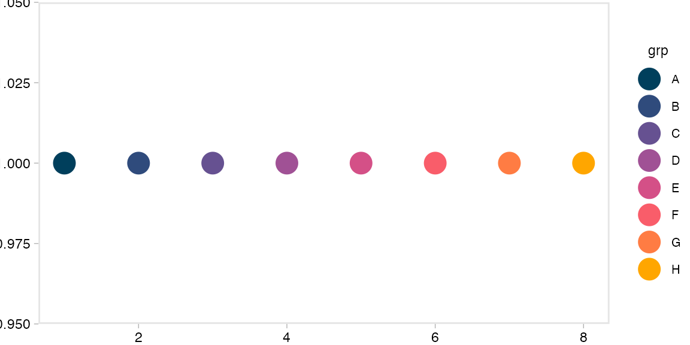

scSidekick - Reporting & Utilities
12_reporting_utilities.RmdOverview
scSidekick is built so that the write-up writes itself. As you analyse, the package captures the provenance you’ll need months later at paper time:
-
Auto-logged figure legends - every figure-saving
function drops a plain-text
.legendsidecar next to the figure, describing exactly what was plotted. -
ExtractMethods()- turns the Seurat command log into a ready-to-paste methods paragraph. -
Passive session logging -
start_session_logger()records your commands and plots;summarize_r_session()turns a messy session into a clean report and a tidy R script. -
create_analysis_pptx()- assembles all your saved figures into a sectioned PowerPoint deck in one call.
Plus the everyday utilities: GetColors(),
ShowColors(), theme_NourMin(),
Nour_pal(), PlotTrendLabeled(), and
PlotComposition().
1. ExtractMethods() - a methods paragraph for free
ExtractMethods() reads the Seurat command log
(bmcite@commands) and reconstructs the key analysis steps
as a prose paragraph and a structured summary - no more
reverse-engineering your own pipeline at submission time.
methods_out <- ExtractMethods(bmcite, cite_seurat = TRUE)
cat(methods_out$methods_text)## Single-cell RNA-seq (scRNA-seq) data (30,672 cells, 17,009 genes; assay: RNA) were analyzed using Seurat. Gene expression counts were normalized using LogNormalize (scale factor 10,000) and 2,000 highly variable genes were identified using the vst method. PCA was performed (50 PCs computed). Cells were clustered using the Louvain algorithm at resolution 0.50, yielding 15 clusters. (Cite: Hao et al., Cell 2021 / Hao et al., Nature Methods 2024 as appropriate.)The companion $summary is a structured list of the
detected steps and their parameters, handy for a supplementary
table.
2. Auto-logged figure legends
Every scSidekick function that saves a figure also writes a
.legend text file beside it, generated from the exact
arguments used. You never have to remember what a figure showed.
fig_dir <- file.path(tempdir(), "figs")
dir.create(fig_dir, showWarnings = FALSE)
# Save a feature map; a PDF and a matching .legend are written:
invisible(GenerateFeatureMaps(bmcite,
features = "CD3E",
output_dir = fig_dir,
object_name = "bmcite"))
list.files(fig_dir)## [1] "CD3E featuremap bmcite.legend" "CD3E featuremap bmcite.pdf"
# Read back the auto-generated legend:
legend_file <- list.files(fig_dir, pattern = "\\.legend$", full.names = TRUE)
cat(readLines(legend_file), sep = "\n")## UMAP feature plot showing expression of CD3E in bmcite. Color scale: low (dark blue) to high (dark red), capped at the per-gene maximum (3.89). Each panel represents one group level; legend shows the shared color bar.You can also log legends or analysis parameters yourself with
log_figure_legend() and log_analysis_params()
when you build a custom figure outside the package.
3. Passive session logging
start_session_logger() installs a lightweight hook that
records the commands you run and the plots you draw for the rest of the
session. Afterwards, summarize_r_session() distills the log
into a Markdown report and a clean, runnable R script - turning an
exploratory session into reproducible output.
# At the top of an analysis session:
start_session_logger()
# ... do your analysis (every command and plot is captured) ...
# At the end, generate a report + a tidy script:
summarize_r_session(
output_md = "analysis_report.md",
output_r = "analysis_clean.R")logger_log_file() and logger_plot_dir()
tell you where the active log and captured plots live.
4. create_analysis_pptx() - auto-assemble a slide
deck
create_analysis_pptx() scans output_dir for
saved PDF/PNG figures, groups them into sections by filename keyword,
and writes a .pptx - your whole analysis as a deck, in one
call.
create_analysis_pptx(
output_dir = "./bmcite_Figures",
object_name = "bmcite")Section grouping rules (keyword in filename -> section label):
| Keyword | Section |
|---|---|
UMAP, DimPlot
|
Dimensionality Reduction |
Feature, Expression
|
Gene Expression |
Heatmap, Dot
|
Heatmaps & Dot Plots |
Spatial |
Spatial |
GSEA, Pathway
|
Pathway Analysis |
CellChat, Communication
|
Cell-Cell Communication |
Annotation, Assignment
|
Cell Annotation |
| anything else | Miscellaneous |
Include or exclude sections by name, and control whether
.legend sidecars are appended as speaker notes on each
slide:
create_analysis_pptx(
output_dir = "./bmcite_Figures",
object_name = "bmcite",
include_sections = c("Dimensionality Reduction", "Gene Expression"),
include_legends = TRUE, # append .legend text as slide speaker notes
legend_font_size = 10) # font size for legend text in speaker notes5. GetColors() - retrieve stored colors
GetColors() returns the named color vector for a
variable, ready to pass into scale_color_manual() or any
scSidekick colors argument.
ct_cols <- GetColors(bmcite, "celltype.l1")
ct_cols## B cell Mono/DC NK Progenitor cells
## "#003F5C" "#74599E" "#E46388" "#F77B38"
## T cell
## "#8DB032"## [1] "lane" "donor" "celltype.l1" "celltype.l2"
## [5] "seurat_clusters"7. PlotTrendLabeled() &
PlotComposition() - composition figures
PlotTrendLabeled() is a publication-ready composition
figure with percentage labels; PlotComposition() is the
same idea without the directional labels.
PlotTrendLabeled(bmcite,
stat.by = "celltype.l1",
group.by = "lane",
split.by = "donor",
label.side = "right")
PlotComposition(bmcite,
group.by = "celltype.l1",
split.by = "donor")
8. Nour_pal() - the built-in palette system
scSidekick ships two hand-curated palettes and a unified accessor:
-
Nour18- 18 qualitative colors (blues, purples, pinks, reds, oranges, greens). Best for datasets with up to 18 cell types. -
Nour20- 20 colors sweeping the full visible spectrum. Better for atlases with many fine-grained subtypes. -
Nour_pal()- returns a color-function (likescale_color_brewerdoes internally), so you can pull any number of colors from either palette by name.
# Nour18 - 18 qualitative colors
scales::show_col(Nour18, cex_label = 0.6)
# Nour20 - full-spectrum 20-color palette
scales::show_col(Nour20, cex_label = 0.6)Nour_pal() pulls a subset of either palette by name and
plugs straight into scale_color_manual() /
scale_fill_manual():
df <- data.frame(x = 1:8, y = 1, grp = LETTERS[1:8])
ggplot(df, aes(x, y, color = grp)) +
geom_point(size = 6) +
scale_color_manual(values = Nour_pal("main")(8)) +
theme_NourMin()
SelectColors() lets you interactively pick a subset of
colors by name from Nour18 - useful when you want to
hand-pick specific hues for a figure:
# Returns the hex codes for just the colors you name
SelectColors("blue1", "teal", "pink2", "orange")9. RenameClusters() - clean cluster labels
Seurat clusters come out as 0, 1, 2, ....
RenameClusters() converts them to zero-padded, prefixed
labels (C01, C02, …) so axes sort correctly
and look publication-ready.
# Simulate raw Seurat cluster IDs
raw_clusters <- factor(c(0, 1, 2, 0, 3, 1, 2))
RenameClusters(raw_clusters, prefix = "C", start = 1)## 0 1 2 0 3 1 2
## C1 C2 C3 C1 C4 C2 C3
## Levels: C1 C2 C3 C4Common usage right after FindClusters():
bmcite$Cluster <- RenameClusters(bmcite$seurat_clusters, prefix = "C", start = 1)
# seurat cluster 0 -> "C01", cluster 1 -> "C02", etc.
# factor levels are in cluster order, so ggplot axes always sort correctly.
bmcite <- PrepObject(bmcite, variables = "Cluster", group.by = "Cluster")
PlotDimPlots(bmcite, group.by = "Cluster")See also
- Vignette 01:
PrepObject,ShowColors,GetColors- color management - Vignette 13:
PlotMetaSummary()and the composition chart family - Every analysis vignette saves to
output_dir- which feeds straight intocreate_analysis_pptx()and produces.legendsidecars automatically.
Session info
## R version 4.3.1 (2023-06-16)
## Platform: aarch64-apple-darwin20 (64-bit)
## Running under: macOS 15.6
##
## Matrix products: default
## BLAS: /Library/Frameworks/R.framework/Versions/4.3-arm64/Resources/lib/libRblas.0.dylib
## LAPACK: /Library/Frameworks/R.framework/Versions/4.3-arm64/Resources/lib/libRlapack.dylib; LAPACK version 3.11.0
##
## locale:
## [1] en_US.UTF-8/en_US.UTF-8/en_US.UTF-8/C/en_US.UTF-8/en_US.UTF-8
##
## time zone: America/Chicago
## tzcode source: internal
##
## attached base packages:
## [1] stats graphics grDevices utils datasets methods base
##
## other attached packages:
## [1] ggplot2_3.5.2 dplyr_1.1.4
## [3] stxBrain.SeuratData_0.1.2 pbmc3k.SeuratData_3.1.4
## [5] ifnb.SeuratData_3.1.0 bmcite.SeuratData_0.3.0
## [7] SeuratData_0.2.2 Seurat_5.2.1
## [9] SeuratObject_5.1.0 sp_2.1-3
## [11] scSidekick_0.1.0
##
## loaded via a namespace (and not attached):
## [1] RColorBrewer_1.1-3 rstudioapi_0.16.0 jsonlite_2.0.0
## [4] magrittr_2.0.3 spatstat.utils_3.1-0 farver_2.1.2
## [7] rmarkdown_2.29 fs_1.6.6 ragg_1.4.0
## [10] vctrs_0.6.5 ROCR_1.0-11 spatstat.explore_3.2-7
## [13] rstatix_0.7.2 htmltools_0.5.8.1 broom_1.0.8
## [16] Formula_1.2-5 sass_0.4.10 sctransform_0.4.1
## [19] parallelly_1.37.1 KernSmooth_2.23-22 bslib_0.9.0
## [22] htmlwidgets_1.6.4 desc_1.4.3 ica_1.0-3
## [25] plyr_1.8.9 plotly_4.10.4 zoo_1.8-14
## [28] cachem_1.1.0 igraph_2.0.3 mime_0.13
## [31] lifecycle_1.0.4 pkgconfig_2.0.3 Matrix_1.6-5
## [34] R6_2.6.1 fastmap_1.2.0 fitdistrplus_1.1-11
## [37] future_1.33.2 shiny_1.11.1 digest_0.6.37
## [40] colorspace_2.1-1 patchwork_1.3.1 tensor_1.5
## [43] RSpectra_0.16-1 irlba_2.3.5.1 textshaping_0.3.7
## [46] ggpubr_0.6.1 labeling_0.4.3 progressr_0.14.0
## [49] spatstat.sparse_3.0-3 httr_1.4.7 polyclip_1.10-6
## [52] abind_1.4-8 compiler_4.3.1 withr_3.0.2
## [55] backports_1.5.0 carData_3.0-5 fastDummies_1.7.3
## [58] highr_0.10 ggsignif_0.6.4 MASS_7.3-60.0.1
## [61] rappdirs_0.3.3 tools_4.3.1 lmtest_0.9-40
## [64] otel_0.2.0 httpuv_1.6.16 future.apply_1.11.2
## [67] goftest_1.2-3 glue_1.8.0 nlme_3.1-164
## [70] promises_1.5.0 grid_4.3.1 Rtsne_0.17
## [73] cluster_2.1.6 reshape2_1.4.4 generics_0.1.4
## [76] gtable_0.3.6 spatstat.data_3.0-4 tidyr_1.3.1
## [79] data.table_1.15.4 car_3.1-3 spatstat.geom_3.2-9
## [82] RcppAnnoy_0.0.22 ggrepel_0.9.6 RANN_2.6.1
## [85] pillar_1.11.0 stringr_1.5.1 spam_2.10-0
## [88] RcppHNSW_0.6.0 later_1.4.2 splines_4.3.1
## [91] lattice_0.22-6 survival_3.5-8 deldir_2.0-4
## [94] tidyselect_1.2.1 miniUI_0.1.1.1 pbapply_1.7-2
## [97] knitr_1.45 gridExtra_2.3 scattermore_1.2
## [100] xfun_0.52 matrixStats_1.2.0 stringi_1.8.7
## [103] lazyeval_0.2.2 yaml_2.3.10 evaluate_0.23
## [106] codetools_0.2-20 tibble_3.3.0 cli_3.6.5
## [109] uwot_0.1.16 xtable_1.8-4 reticulate_1.42.0
## [112] systemfonts_1.0.6 jquerylib_0.1.4 dichromat_2.0-0.1
## [115] Rcpp_1.1.0 globals_0.16.3 spatstat.random_3.2-3
## [118] png_0.1-8 parallel_4.3.1 pkgdown_2.1.3
## [121] dotCall64_1.1-1 listenv_0.9.1 viridisLite_0.4.2
## [124] scales_1.4.0 ggridges_0.5.6 purrr_1.0.4
## [127] crayon_1.5.2 rlang_1.1.6 cowplot_1.2.0.9000